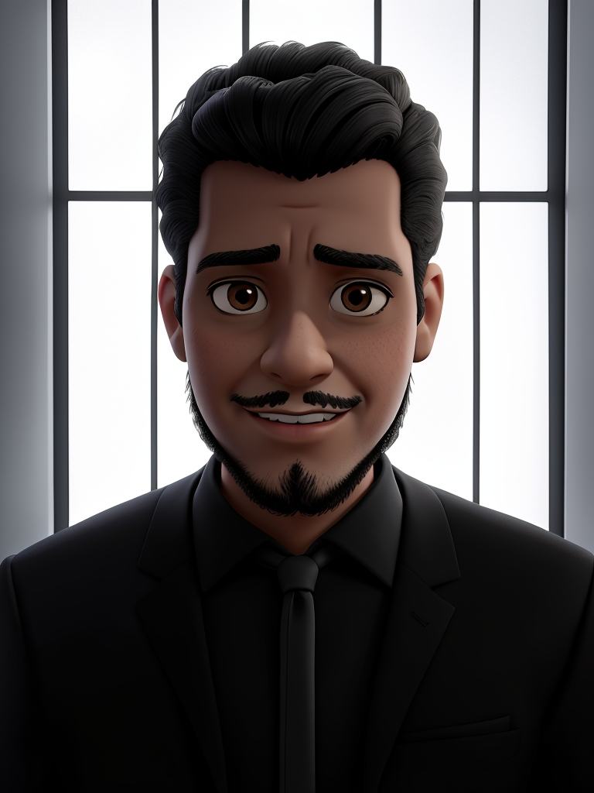

Marcos Duque
Future Web Developer
Skill Progression


hola. como ya sabes soy Marcos y estudio desarrollo web que es algo que me apasiona la creacion de webs y siempre me ha interesado encontrar soluciones creativas a los problemas. espero trabajar en una empresa dinámica y colaborativa donde pueda utilizar mis habilidades y seguir mejorando en esto que me gusta
Proyectos